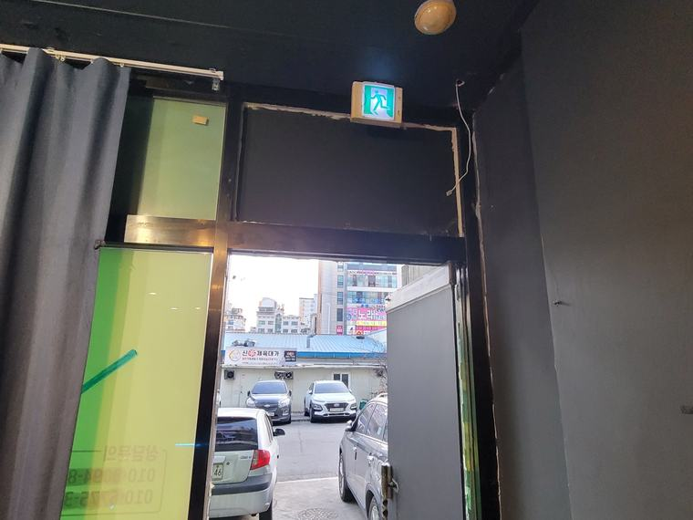
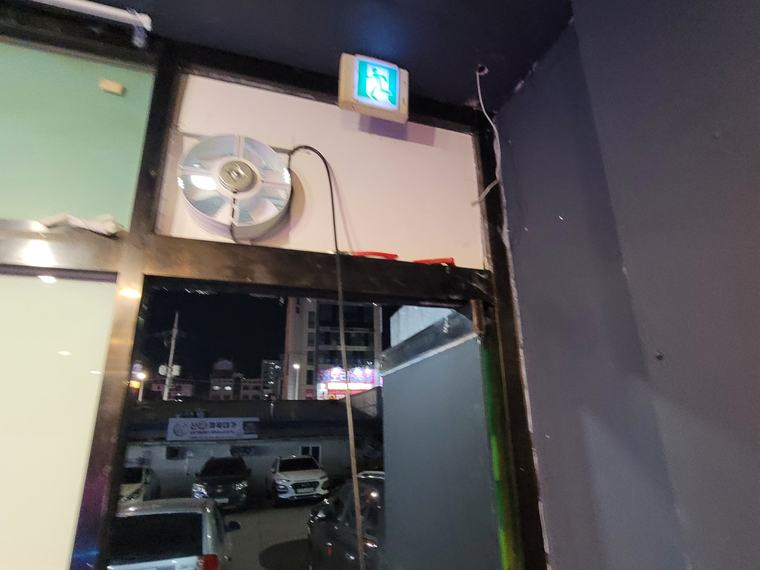

상가 출입구 상부 환풍기 설치
문이 열릴 때가 기회입니다
매장은 손님이 드나들 때마다 문이 열립니다. 그 순간 바깥 공기가 들어옵니다. 이 흐름과 맞물리게 배기 위치를 잡으면 별도 급기 설비 없이도 공기가 돕니다.
- 현장
- 상가 매장
- 시공 내용
- 출입구 상부 배기 설치
- 소요 시간
- 당일 완료
- 중점 사항
- 출입 동선 활용 · 바람 방향
매장 냄새는 손님이 먼저 느낍니다
매장 안에 오래 있으면 그 공간의 냄새에 익숙해집니다. 정작 사장님은 못 느끼는데 처음 들어온 손님은 바로 느낍니다. 음식점이 아니어도 마찬가지입니다. 옷 매장의 원단 냄새, 미용실의 약품 냄새, 오래된 상가 특유의 냄새가 있습니다.
이런 냄새는 재방문에 영향을 줍니다. 상품이나 서비스와 무관하게 인상이 남습니다.
냄새를 없애는 방법은 향을 덮는 것이 아니라 공기를 갈아주는 것입니다. 방향제는 냄새 위에 다른 냄새를 얹을 뿐, 원인이 되는 공기는 그대로 있습니다.
시공 전 · 후
출입문 위쪽 벽면에 배기 지점을 잡았습니다.


출입문을 급기구로 씁니다
매장은 손님이 드나들 때마다 문이 열립니다. 하루에 수십 번, 많으면 수백 번입니다. 그때마다 바깥 공기가 들어옵니다. 이걸 이용하면 별도 급기구를 만들지 않아도 됩니다.
중요한 건 배기 위치를 문에서 먼 쪽으로 잡는 것입니다. 문 바로 옆에서 뽑으면 들어온 공기가 그대로 되나가 매장 안쪽은 그대로입니다. 반대편에서 뽑아야 들어온 공기가 매장을 가로질러 갑니다.
이 현장은 매장 구조상 반대편 벽이 옆 점포와 붙어 있어 배출이 어려웠습니다. 그래서 출입구 상부를 쓰되, 높이를 최대한 올려 잡았습니다. 문으로 들어오는 공기는 아래쪽으로 흐르고 배기는 위쪽에서 이뤄지도록 층을 나눈 것입니다.
배출 각도는 위쪽 바깥으로 흐르게 했습니다. 아래를 향하면 드나드는 손님 머리 위로 바람이 떨어지고, 겨울에는 그게 불쾌하게 느껴집니다.
이 현장의 핵심
- 출입문을 급기 경로로 — 별도 급기구 없이 문이 열리는 흐름을 이용했습니다.
- 높이로 층을 나눔 — 들어오는 공기는 아래, 나가는 공기는 위. 같은 벽에서도 흐름이 겹치지 않게 했습니다.
- 손님 동선을 피한 배출 — 배출 각도를 위쪽 바깥으로 잡아 출입하는 사람에게 바람이 닿지 않게 했습니다.
매장 환기 위치를 정할 때
가장 먼저 볼 것은 배출된 공기가 어디로 가는가입니다. 옆 매장 출입구, 위층 창문, 손님이 줄 서는 자리를 향하면 나중에 문제가 됩니다.
그다음이 들어올 공기입니다. 출입문이 자주 열리는 매장이면 그것으로 충분한 경우가 많고, 문이 거의 닫혀 있는 업종이면 별도 급기를 계획해야 합니다.
매장 평면과 출입문 위치, 바깥 벽 사진을 보내주시면 가능한 위치를 몇 군데 잡아 비교해 드립니다.
자주 묻는 질문
별도 급기구를 만들어야 하나요?
출입문이 자주 열리는 매장이면 그 흐름으로 급기가 어느 정도 확보됩니다. 문이 거의 닫혀 있는 업종이면 별도 계획이 필요합니다.
출입구에 달면 손님에게 바람이 닿지 않나요?
배출 각도를 위쪽 바깥으로 잡으면 드나드는 사람에게 바람이 떨어지지 않습니다.
비슷한 현장의 다른 사례
같은 분류에서 진행한 시공입니다. 현장 조건이 비슷하면 방식도 비슷하게 잡힙니다.